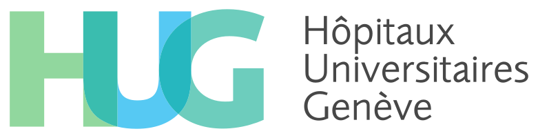

KIDMO—Kidney prediction model
Risk calculator for deceased-donor kidney transplantation in Switzerland.
What is KIDMO?
KIDMO is a clinical prediction model designed to help clinicians better understand how the combination of donor and recipient clinical characteristics influences long-term graft survival in deceased-donor kidney transplantation.
Why is KIDMO useful?
While it is not possible to predict the exact timing of organ loss, the high-quality data collected in Switzerland allows us to estimate the risk of kidney graft loss for individual patients based on specific clinical characteristics.
In the statistical model, the primary outcome was time to graft loss, defined as the interval from the date of transplantation to the occurrence of irreversible graft failure, indicated by a return to dialysis or retransplantation. Patient death was treated as a competing risk.
The model is based on data from over 2,000 kidney transplant recipients who underwent transplantation between 2008 and 2021, as part of a national multicenter cohort—the Swiss Transplant Cohort Study (STCS). Donor clinical information was obtained from the Swiss Organ Allocation System (SOAS).
More details about the KIDMO study can be found in the published study protocol.
Who created EXAM?
KIDMO was developed by Swisstransplant—the national organisation for organ donation and transplantation in Switzerland—in collaboration with all six Swiss transplant centers and the Swisstransplant Kidney Working Group (STAN).
Terms of use
KIDMO is currently under development for research purposes only; the program must not be used in clinical practice for decision-making.
The KIDMO risk calculator (hereinafter referred to as “program”) comes with ABSOLUTELY NO WARRANTY and LIMITATION OF LIABILITY. The program is currently under development and FOR RESEARCH PURPOSES ONLY; this program must not be used in clinical practice, including, but not limited to, clinical decision making. This program is provided WITHOUT ANY WARRANTY; without even the implied warranty of merchantability or fitness for a particular purpose. In no event, unless required by applicable law, will any copyright holder, or any other party who uses this program, be liable for damages, including any general, special, incidental, or consequential damages arising out of the use or inability to use this program.
Risk calculator
Interpretation
The HR (hazard ratio) shows the relative increase or decrease in the event rate of kidney graft loss for this recipient compared to the median event rate in the reference population from 2008 to 2021. So, an HR > 1 indicates a higher hazard rate, and an HR < 1 indicates lower hazard rate and a more favorable outcome, as we observed on average. A recipient with an HR of 1.0 corresponds to the median hazard rate in the Swiss reference population of kidney transplant recipients.
The Rank is the percentile of the recipients’ calculated hazard ratio and is interpreted as the percentage of recipients in the reference population with a lower or equal hazard rate compared to the new recipient. The rank has a range from 0% to 100%, and the lower the score, the more favorable the outcome.
The 2-yr risk and 5-yr risk are the cumulative incidence, i.e., the probability of kidney graft failure over time at 2 and 5 years after transplant, respectively.
An HR of 0.52 means the recipient may have a graft loss rate that is 0.52 times that of a recipient with the median hazard rate. In other words, the hazard rate is reduced by 48%.
A recipient’s Rank of 10% indicates that 10% of recipients had an equal or lower hazard rate in the Swiss population, while 90% had a higher hazard rate.
A 2-year risk of 0.02 and a 5-year risk of 0.04 correspond to a 2% and 4% probability of kidney graft loss within two and five years after transplantation, respectively. In other words, approximately 2 out of 100 recipients and 4 out of 100 recipients with similar clinical characteristics may experience kidney graft loss within the first two and five years, respectively.
The hazard rate is the frequency at which kidney transplants fail over time. The reference population included all kidney recipients at Swiss transplant centers between 2008 and 2021 who were included in the study. The median risk scenario is defined by a donor age of 65 and a transplant year of 2015, with all other variables set to their reference levels. By default, the risk calculator is initialized with the reference values, except for the transplant year, which is set to the current year.
References
Study protocol
Schwab S, Sidler D, Haidar F, et al. Clinical prediction model for prognosis in kidney transplant recipients (KIDMO): study protocol. Diagn Progn Res. 2023;7(1):6. doi:10.1186/s41512-022-00139-5
Acknowledgements
KIDMO was developed by Swisstransplant in collaboration with all six Swiss transplant centers. Kidney transplant recipients were involved in the development of KIDMO.
